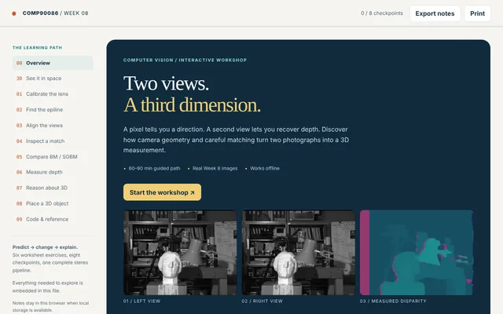
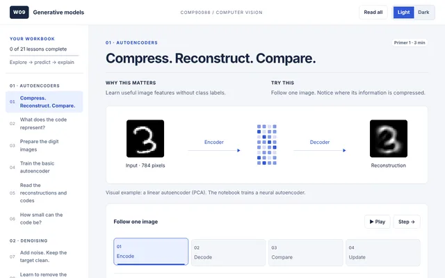
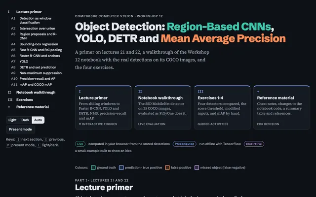
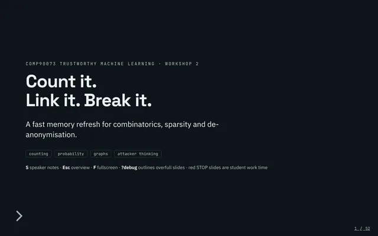

Teaching
Workshop tutor at The University of Melbourne. Every workshop has an interactive page: reveal.js decks and browser workbooks, many with models that run live in the page.
Current teaching
COMP90086 Computer Vision
The University of Melbourne · 2026 · 10 workshops
Arrays, plots and pixels
NumPy, Matplotlib and OpenCV: how an image is just an array, and how to look at it.

Filtering in space and frequency
Convolution with small windows, and the same filters seen as frequency masks.

Colour, light and learned filters
Colour spaces and image formation, with a CNN running live in the browser.

Counting a CNN
Parameter and output-size counting for convolution, pooling and dense layers.

Vision Transformers and Grad-CAM
Patches to tokens, self-attention, attention distance, and Grad-CAM explanations.

Features, Hough and RANSAC
Edges step by step, Hough voting for lines, and robust fitting with RANSAC.

Two views, a third dimension
Calibration, epipolar lines, rectification and stereo matching, turning two photographs into depth.

Generative models
Autoencoders, denoising, VAEs and DCGANs, with the notebook’s results to explore step by step.

Diffusion models
From noise to digits: a diffusion primer with the worksheet U-Net running in the browser.

Image segmentation
From pixel clustering to encoder–decoders, with a live walkthrough of the notebook.

Object detection
From sliding windows and R-CNN to YOLO, DETR, NMS and mAP, with four Model Zoo detectors evaluated on the notebook's COCO images.
COMP90073 Trustworthy Machine Learning
The University of Melbourne · 2026 · 9 workshops

Count it, link it, break it
A refresher on counting, sparsity and linkage, and how they drive de-anonymisation attacks.

Privacy leaks through the interface
How query answers, trained models and anonymised tables each leak private data.

k-anonymity and differential privacy
k-anonymity via Incognito, and bounding what any single record can reveal.

Anomaly detection and clustering
Choosing metrics, k-means as an outlier detector, and evolving fraud.

Autoencoders and one-class SVM
Autoencoders versus PCA, back-propagation by hand, and one-class SVM boundaries.

OOD detection, contrast mining and adversarial attacks
When test data leaves the training distribution, and how to perturb a model on purpose.

Attacks, autodiff and robust generalisation
Iterative FGSM, forward- versus reverse-mode autodiff, and the adversarial generalisation gap.

Backdoors and certified defences
Threat models, randomised smoothing, adversarial CAPTCHAs and a live backdoored MNIST model.
Teaching assistantships
- MScDeep LearningSharif University of Technology · Dr. Mahdieh Soleymani BaghshahS23
- MScNeural NetworksUniversity of Tehran · Dr. Ahmad KalhorS23
- BScMScIntro to Machine LearningSharif University of Technology · Dr. Sharifi-ZarchiF23
- BScArtificial IntelligenceSharif University of Technology · Dr. Mahdieh Soleymani Baghshah, Dr. M.H. RohbanF23
- BScArtificial IntelligenceUniversity of Tehran · Dr. Yadollah Yaghoobzadeh, Dr. Hakimeh FadaeiS23, F22, S22
- BScEngineering Probability & StatisticsUniversity of Tehran · Dr. Behnam BahrakF22
- BScDesign & Analysis of AlgorithmsUniversity of Tehran · Dr. Mohammad Javad DoustiS22, F22
- BScData Structures & AlgorithmsUniversity of Tehran · Dr. Hesham FailiF22
Summer schools

Introduction to Machine Learning and Artificial Intelligence
The basics of machine learning and its prerequisites: regression, decision trees and neural networks, with hands-on exercises on real data. The course ends with an introduction to deep learning, image-processing models and a review of recent models.

Deep Learning and Machine Intelligence
The basics of machine learning and its prerequisites: regression, decision trees and neural networks.